Overview
Soil Node is a small IoT device that monitors the soil moisture, air temperature, and humidity around your plants, to help them grow better with less effort. Once an hour, the node wakes up, samples its sensors for 5 seconds (soil moisture, air temperature, air humidity, and battery voltage), and sends the readings over Wi-Fi to a Python web server.
The server timestamps and smooths each reading, then plots it on three graphs over time: temperature and humidity, soil moisture, and battery level. Together they show how your home's environment, the moisture in the soil, and the battery change over time. Each node is assigned the type of plant it's monitoring, from a cactus to a tropical fern, and the server gives smart care recommendations based on it.
Hardware
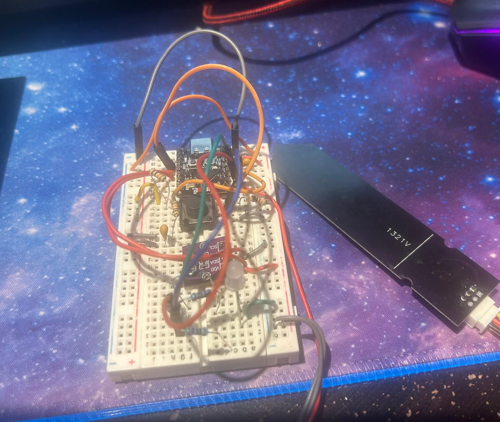
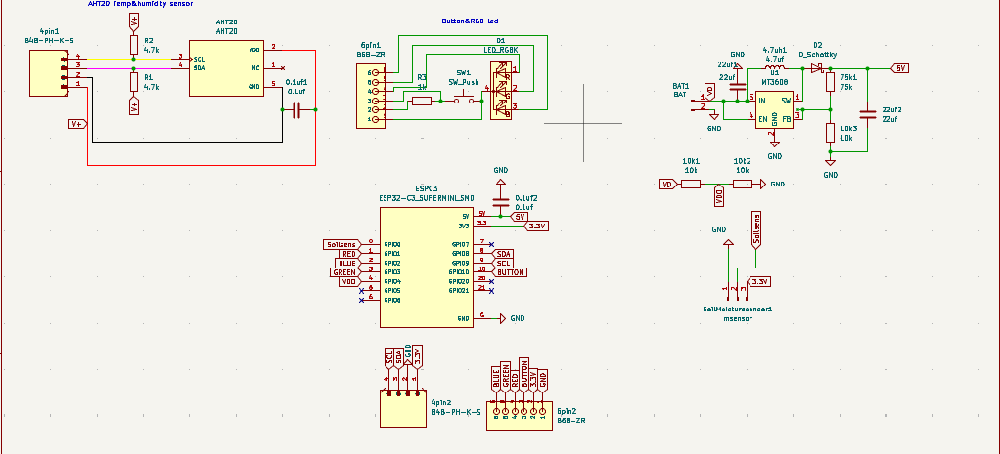
I designed the node in KiCad around an ESP32-C3, chosen for its power efficiency, small size, and built-in Wi-Fi.
- Soil moisture: a capacitive soil moisture sensor (v2.0) on an analog input.
- Air temperature and humidity: a higher-precision AHT20 sensor over I²C.
- RGB LED and button: for telling nodes apart, pairing, and sending readings outside the hourly schedule.
- Power: runs on a NiMH or lithium polymer (LiPo) battery, with an MT3608 boost converter providing a stable 5 V rail.
Before committing to a PCB, I wired the full circuit on a breadboard to check the sensor readings, I²C communication, LED and button behavior, and soil probe calibration, and to fix wiring issues while changes were still cheap.
PCB Design
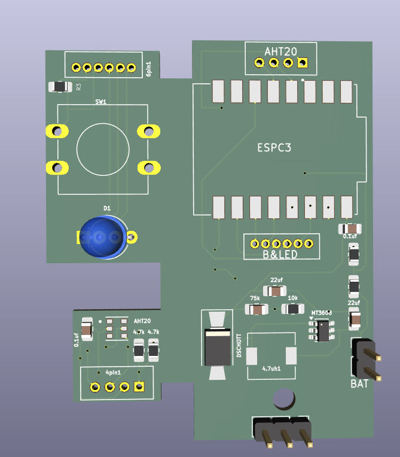
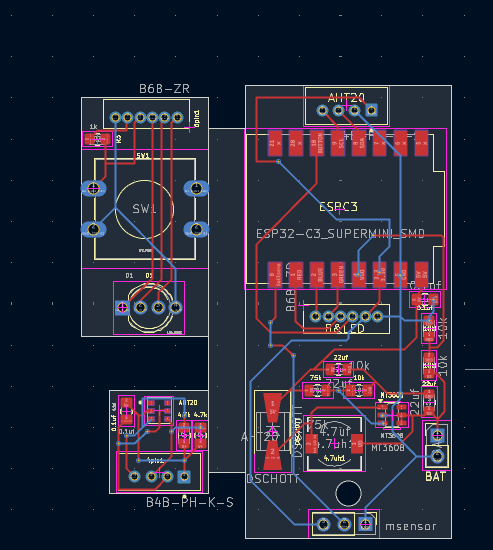
The custom PCB brings the ESP32-C3, power regulation, and sensor connectors onto one compact board, with JST-style connectors so the soil probe and AHT20 can be swapped easily. I used the 3D render to check component fit and connector placement before ordering.
Features
1. Wi-Fi Setup Portal
No code changes are needed to set up a node. On first boot it opens its own hotspot, your phone shows a setup page, and you choose your Wi-Fi network, the server address, and a node ID. The node then saves the settings and joins your network.
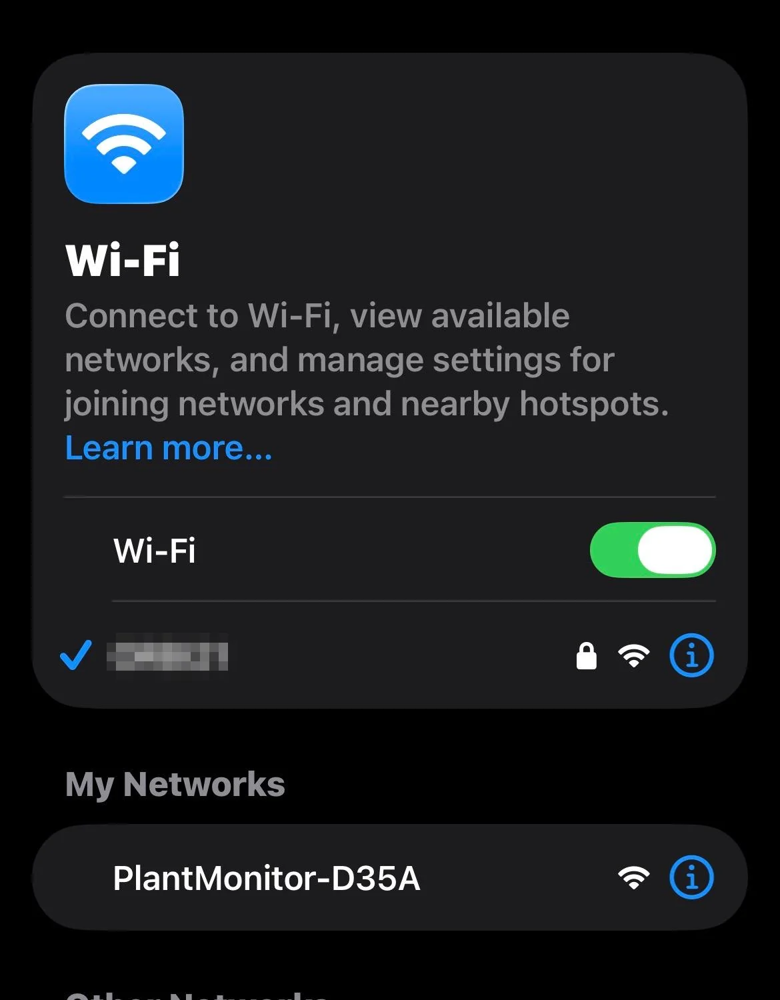
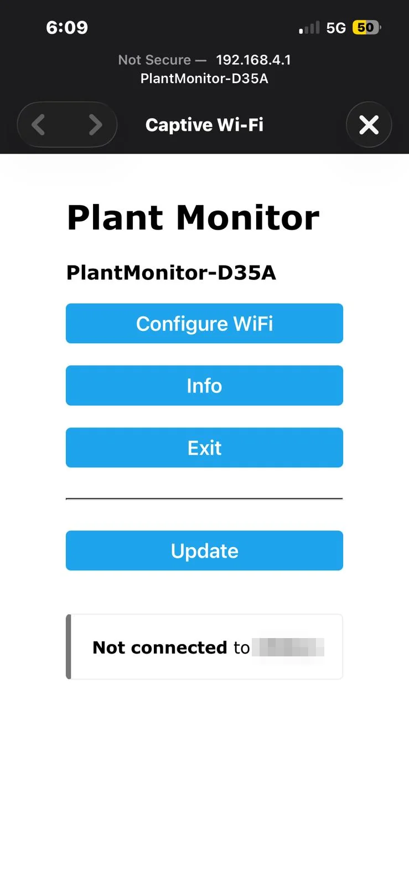
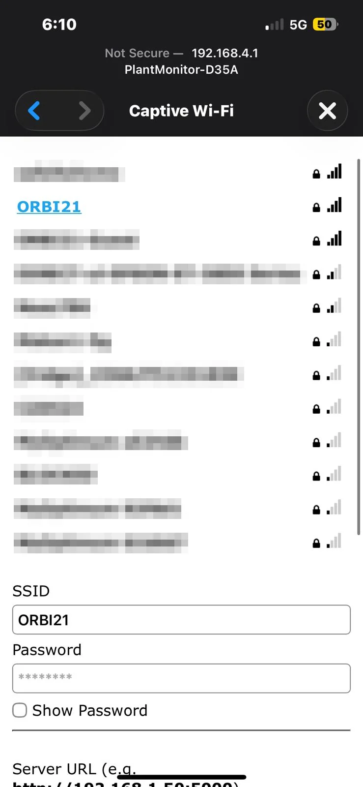
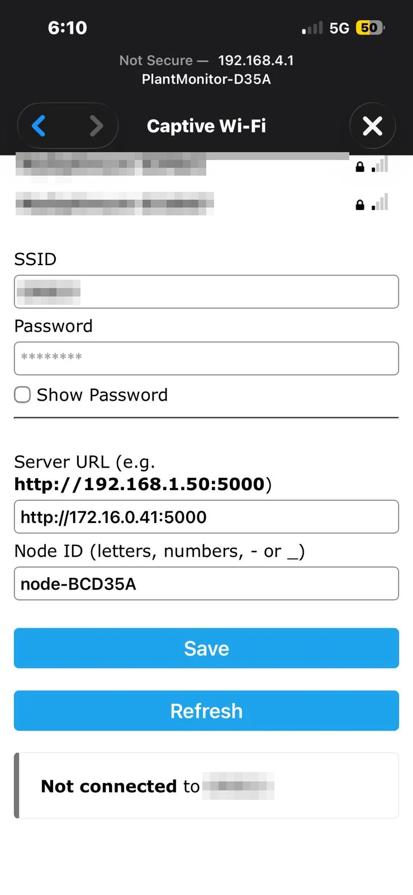
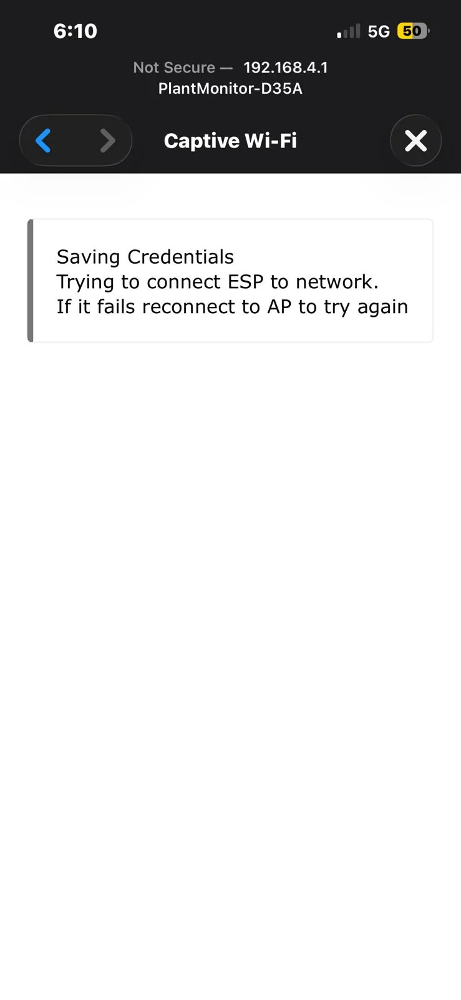
Neighbouring Wi-Fi network names are blurred for privacy.
2. LED Colour Switching
Each node has an RGB LED so you can tell your plants apart at a glance. Pick a new colour on the dashboard, and the node picks it up the next time it wakes (within the hour, or right away if you press its button), then lights up in the new colour for 5 seconds.
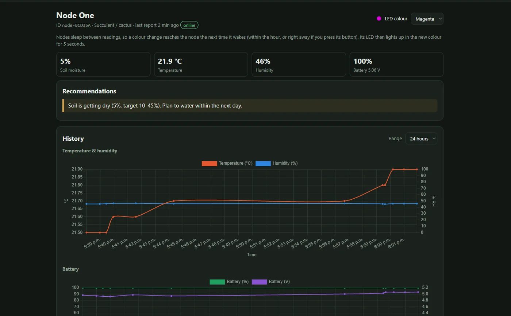
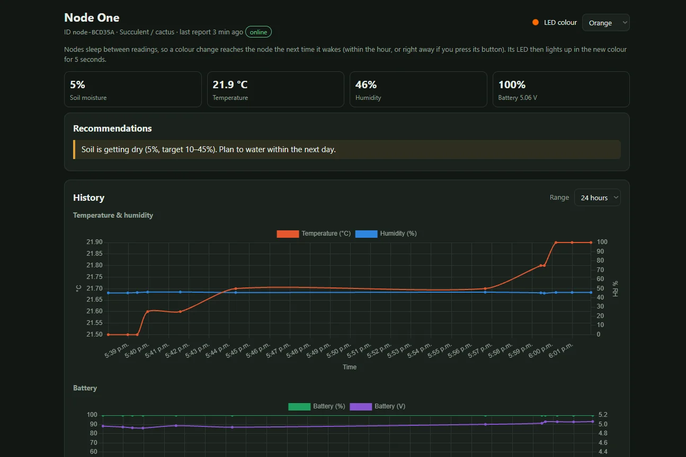
3. Server Dashboard
Every node reports to a small web server that stores its readings, draws history charts, gives care recommendations for the plant type, and raises alerts when something drifts out of range.
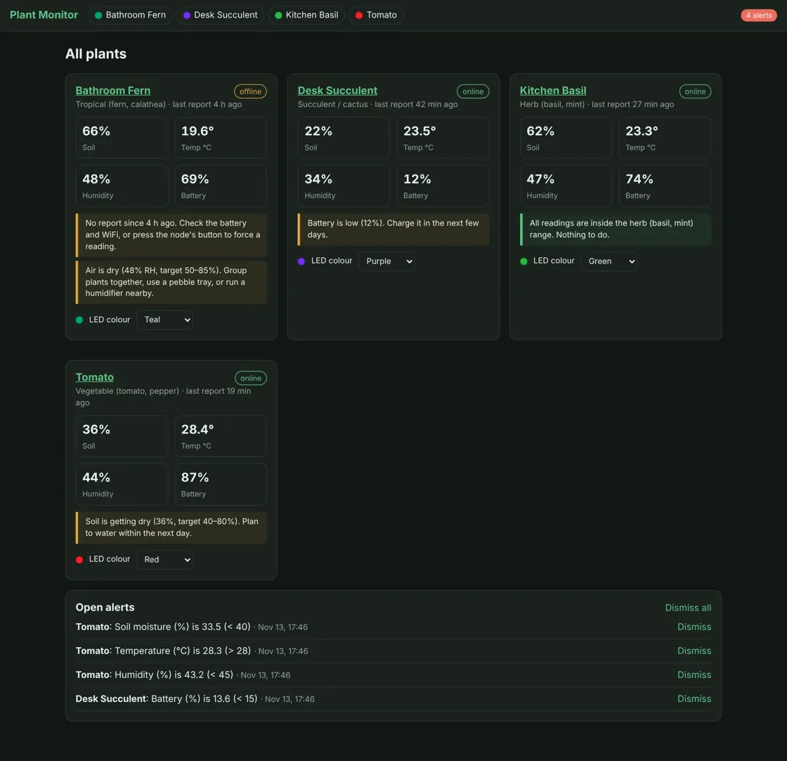
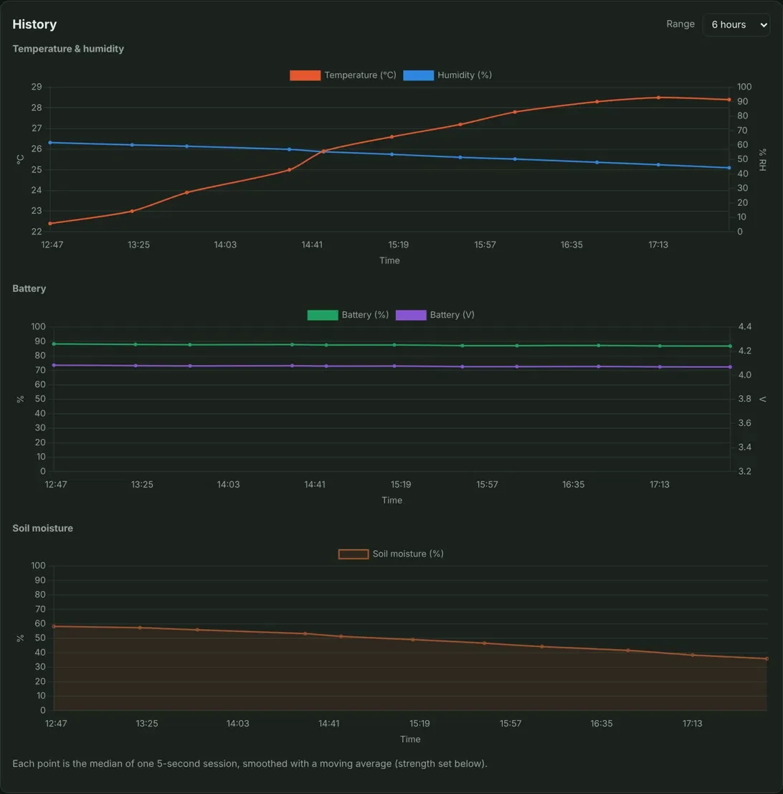
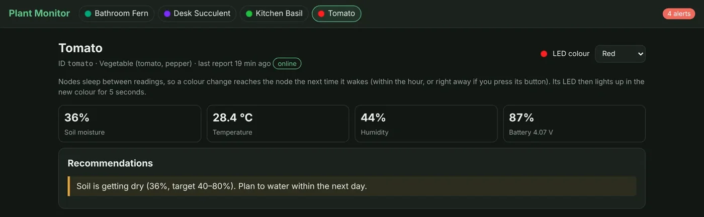
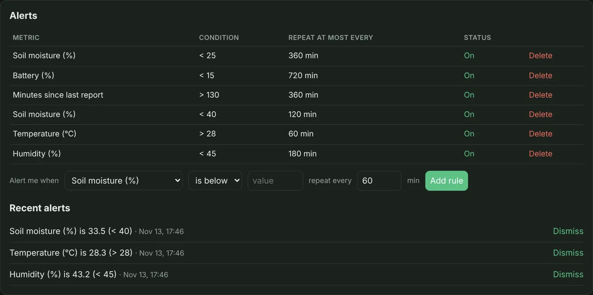
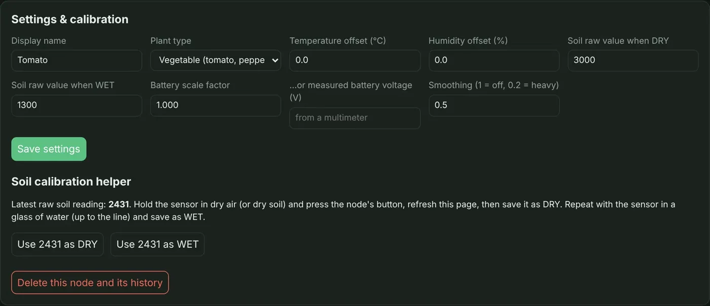
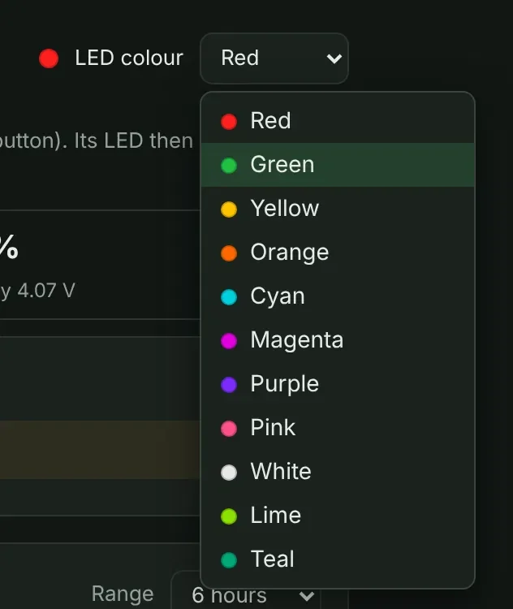
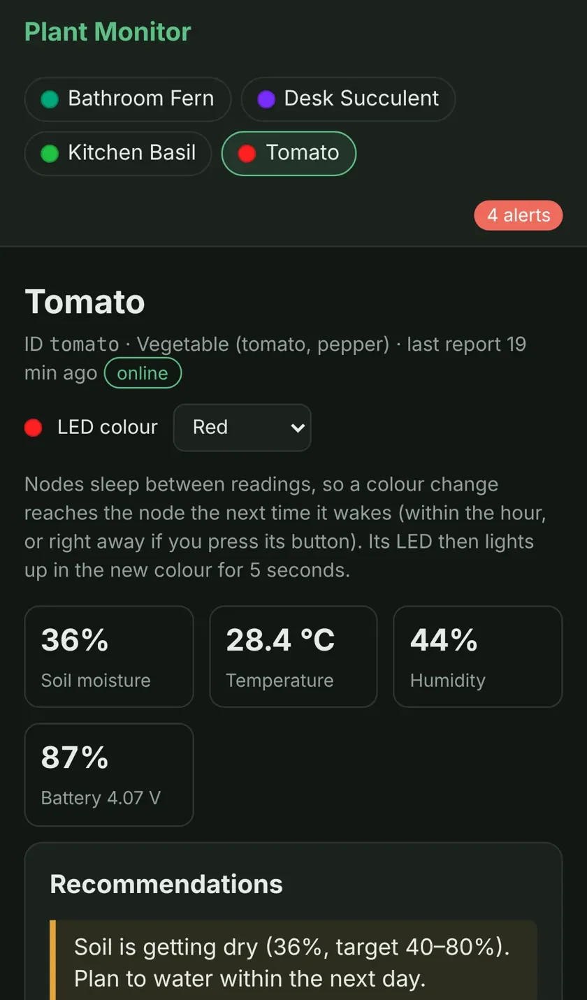
Current Progress
- WaitingPCBs ordered: waiting for the boards to arrive for assembly and testing.
- In progressDesigning a casing for the node to protect the electronics in the pot.
Future Improvements
Lower power use and better Wi-Fi range, waking the node and sending it commands wirelessly, and smart home integration.
Measure the nutrients in the soil, not just moisture, so you know when to fertilize.
Ask questions about how best to care for your plant and get recommendations and tips based on its live readings.
A library of plant profiles, plus easy input fields for setting your own specific targets for each plant.
Nodes relay each other's data, so sensors can reach plants beyond your router's range.
Upload a photo of a sick plant and the AI assistant analyzes it for problems and recommends what to do.